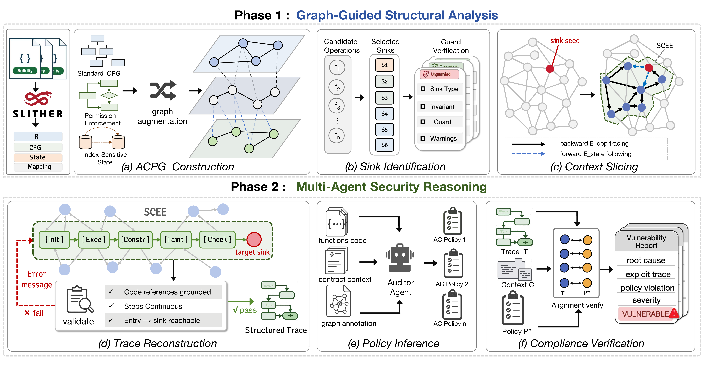

Abstract
Smart contracts are immutable, self-executing programs deployed on blockchains that typically manage substantial financial assets, making them a prime target for attackers. While Access Control (AC) vulnerabilities constitute the leading cause of financial loss, identifying them is increasingly challenging as authorization logic spans multiple functions with shared state variables and diverse business rules. Existing detectors are heavily dependent on guard pattern matching or sender taint analysis, but these methods frequently prove ineffective in the context of DeFi protocols. The root cause of such vulnerabilities is rarely the absence of guard patterns, but rather the exploitable reachability of privileged operations under unintended policies.
Tackling this fundamental issue requires evaluating two distinct criteria, namely identifying which operations carry privileged effects and determining whether any feasible path can reach them in violation of the authorization policy implied by the contract's own protection patterns. In this work, we propose ACLens, a multi-agent framework guided by program graphs to conduct the analysis in two dedicated phases. The first phase performs deterministic graph analysis to pinpoint critical sinks and delineate a compact evidence boundary around them. The second phase deploys three agents to reconstruct an execution trace reaching each sink, infer the intended authorization policy from intra-contract evidence, and determine whether the reconstructed trace violates the inferred policy. On a DeFi exploit benchmark of 46 validated projects and 97 vulnerable functions, ACLens reaches 83.5% recall and 55.1% F1, outperforming the strongest baseline (i.e., ACTaint) by 46.4 points in recall and 20.0 points in F1.
1. Introduction & Motivation
Decentralized finance (DeFi) protocols built on smart contracts now manage billions of dollars in total value locked. Because these contracts are immutable once deployed, a vulnerability cannot be patched and exploitation leads to irreversible financial losses. Among all vulnerability classes, access control (AC) defects are the most costly, arising when critical operations are executed without proper authorization. In 2024, access-control exploits accounted for 75% of all crypto hacks, with roughly $1.7 billion stolen. The 2025 OWASP Smart Contract Top 10 ranks AC vulnerabilities as the number-one threat.
Unlike reentrancy or integer overflow, AC vulnerabilities depend on the developer's implicit intent rather than on language semantics. A public function that modifies the owner variable, for instance, is vulnerable only if the developer intended to restrict that operation. On standard benchmarks where each flaw is confined to a single function, specialized tools perform reasonably well. However, these benchmarks rarely mirror production DeFi contracts. This observation is further supported by our evaluation on a new DeFi benchmark under a strict function-level protocol, in which the best-performing baseline reaches only 37.1% recall on confirmed exploits.
"This performance gap indicates a structural limitation in existing detection methods. AC vulnerability detection begins by locating critical operations... The more challenging task lies in determining whether critical operations actually lack adequate protection."
Traditional tools address this challenge by verifying the presence of known guard patterns. In production DeFi contracts, however, authorization logic is rarely confined to standard modifiers or recognizable patterns. It emerges from intra-contract state relationships that are distributed across multiple functions and shared state variables, making it only partially visible to pattern-based analysis.
LLM-based approaches have also been explored for AC detection. Applying them effectively, however, requires overcoming two obstacles inherent to AC vulnerabilities:

Motivation: Authorization logic is often structurally indistinguishable from normal business logic in standard graphs.
-
C1: Authorization logic is structurally indistinguishable in standard program representations. In conventional program graphs, guards that depend on the caller are encoded identically to ordinary business predicates, and all accesses to the same indexed state variable collapse into a single abstract location regardless of their index keys. As a result, no structural signal separates an authorization check from an arithmetic bound or a balance lookup.
-
C2: Vulnerability is defined against an implicit policy specific to the contract. AC violations are meaningful only relative to an authorization policy that the developer rarely specifies explicitly. Traditional detectors reduce this ambiguity to closed-world pattern matching. LLMs can reason about open-ended policies, but without structured comparative evidence they cannot distinguish intentionally permissionless interfaces from accidentally unprotected ones.
2. Methodology
A two-phase framework combining structural graph analysis with multi-agent semantic reasoning.
Detecting AC vulnerabilities requires first locating the operations that carry privileged effects and delimiting the security-relevant context around them. It further requires determining whether any feasible execution reaches those operations in violation of the contract's implicit authorization policy. ACLens delegates these two tasks to structural analysis guided by the program graph and multi-agent security reasoning, respectively. By design, the first phase determines what each agent in the second phase is permitted to see, ensuring that semantic judgment is always grounded in structurally scoped evidence.

Figure 1: Overview of the ACLens framework architecture. Phase 1 performs structural analysis guided by the program graph to construct the ACPG, identify critical sinks, and extract Sink-Conditioned Execution Environments (SCEEs). Phase 2 performs multi-agent security reasoning.
2.1 ACPG Construction
We first construct a Code Property Graph (CPG) from Slither's parsing results. For AC analysis, standard CPGs lack authorization semantics and treat all mapping accesses as equivalent regardless of the key.
The Access Control Property Graph (ACPG) resolves this by: (1) encoding guard semantics (e.g., caller-dependent predicates) directly into the graph via E_role edges, and (2) resolving cross-function state connections at the mapping-key level using symbolic keys. For instance, balances[msg.sender] carries the key <sender>, allowing precise cross-function state tracking.
2.2 Sink Identification & Slicing
An operation is a critical sink if an unauthorized execution would violate a contract-level security invariant (e.g., Asset, Governance). ACLens queries ACPG edges to locate these sinks deterministically.
Instead of passing the full contract to LLMs, we extract a Sink-Conditioned Execution Environment (SCEE) around each sink by propagating relevance over dependency edges. This relevance-guided backward slicing ensures agents are not overwhelmed by irrelevant code while preserving critical state relationships.
2.3 Multi-Agent Security Reasoning
Rather than exposing a single LLM to the entire contract, ACLens uses the extracted SCEE to power three specialized agents, orchestrating a comprehensive security review:
3. Evaluation
Rigorous testing on a comprehensive DeFi benchmark of 46 validated projects and 97 vulnerable functions.
RQ1: Detection Effectiveness
We evaluate ACLens against state-of-the-art baselines including Slither, Mythril, SPCon, AChecker, GPTLens, and ACTaint. The results demonstrate the superior performance of our approach.
| Method | TP | FP | FN | Precision (%) | Recall (%) | F1 (%) |
|---|---|---|---|---|---|---|
| Slither | 8 | 22 | 89 | 26.7 | 8.2 | 12.6 |
| Mythril | 0 | 0 | 97 | - | 0.0 | - |
| SPCon | 1 | 0 | 96 | 100.0 | 1.0 | 2.0 |
| AChecker | 0 | 0 | 97 | - | 0.0 | - |
| GPTLens | 18 | 43 | 79 | 29.5 | 18.6 | 22.8 |
| ACTaint | 36 | 72 | 61 | 33.3 | 37.1 | 35.1 |
| ACLens | 81 | 116 | 16 | 41.1 | 83.5 | 55.1 |
Answer to RQ1
ACLens achieves 83.5% recall and 55.1% F1 score on the complex DeFi benchmark, outperforming the strongest specialized baseline (ACTaint) by 46.4 points in recall and 20.0 points in F1. This demonstrates that combining structural evidence extraction with semantic multi-agent reasoning effectively uncovers deeply hidden authorization flaws.
RQ2: Backbone Sensitivity
We examine whether detection performance remains stable when the LLM backbone changes, testing with GPT-4o, GPT-4o-mini, and DeepSeek-R1.
| Tool | Model | TP | FP | Precision (%) | Recall (%) |
|---|---|---|---|---|---|
| ACLens | GPT-4o | 81 | 116 | 41.1 | 83.5 |
| ACLens | GPT-4o-mini | 79 | 119 | 39.9 | 81.4 |
| ACLens | DeepSeek-R1 | 80 | 115 | 41.0 | 82.5 |
| ACTaint | GPT-4o | 36 | 72 | 33.3 | 37.1 |
| ACTaint | GPT-4o-mini | 42 | 427 | 9.0 | 43.3 |
| ACTaint | DeepSeek-R1 | 39 | 118 | 24.8 | 40.2 |
Answer to RQ2
ACLens exhibits remarkable robustness across different LLM backbones. Even when using the smaller GPT-4o-mini model, ACLens maintains an 81.4% recall, dropping only 2.1 points from the GPT-4o baseline. This confirms that our graph-guided structural extraction successfully isolates the necessary evidence.
RQ3: Ablation Study
We measure the contribution of multi-agent reasoning, graph slicing, and sink identification by building ablation variants and evaluating them on the DeFi dataset.
| Configuration | TP | FP | FN | Recall (%) | F1 (%) |
|---|---|---|---|---|---|
| Full System | 81 | 116 | 16 | 83.5 | 55.1 |
| w/o multi-agent | 65 | 87 | 32 | 67.0 | 52.2 |
| w/o graph slicing | 77 | 119 | 20 | 79.4 | 52.6 |
| w/o sink ident. | 81 | 429 | 16 | 83.5 | 26.7 |
Conclusion
Every component is essential. Removing multi-agent reasoning drops recall by 16.5 points; removing graph slicing drops recall on large contracts; removing sink identification inflates false positives from 116 to 429.
RQ4: Scoping Efficiency
We measure how graph-guided slicing changes the input that reaches phase two. The table below profiles the analysis cost under GPT-4o-mini on the five largest DeFi projects.
| Project (repr. func) | LoC | Tokens (K) | Cost (¢) |
|---|---|---|---|
approveToken | 4,053 | 109.3 | 2.0 |
swap | 4,008 | 34.6 | 0.7 |
transferFrom | 3,367 | 42.4 | 0.8 |
setToken | 3,070 | 86.7 | 1.9 |
withdraw | 2,488 | 82.8 | 1.6 |
| All (mean) | 1,375 | 59.0 | 1.2 |
Massive Reduction
Graph-guided structural analysis reduces the average input context from over 6,333 tokens (full contract) to just 92 tokens per function (97.9% reduction), drastically lowering API costs.